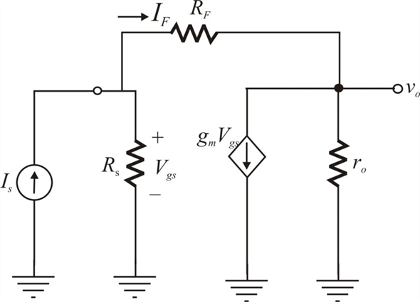

From Figure 1, Use ohm’s law to write the expression for current flowing through the resistor.
Apply Kirchhoff’s current law at node.
Substitute for  in the equation.
in the equation.
…… (1)
Refer to the circuit diagram of trans-resistance amplifier in Figure E10.15 in the textbook.
Draw the equivalent circuit for the Figure.

Figure 1
From Figure 1, Use ohm’s law to write the expression for current flowing through the resistor.
Apply Kirchhoff’s current law at node.
Substitute for in the equation.
…… (1)
Applying Kirchhoff’s current law at node 
Rewrite the equation.
Substitutefor in the equation.
…… (2)
Recall equation (2).
Multiply with term.
From equation (1), Substitute for
Rewrite the equation.
Hence the closed loop gain of the amplifier  is
is
.
With feedback approach calculated closed loop gain for trans-resistance amplifier is,
Notice that the only difference is that  is replaced by .
is replaced by .
The condition for feedback-analysis method to be reasonably accurate for the above circuit is.